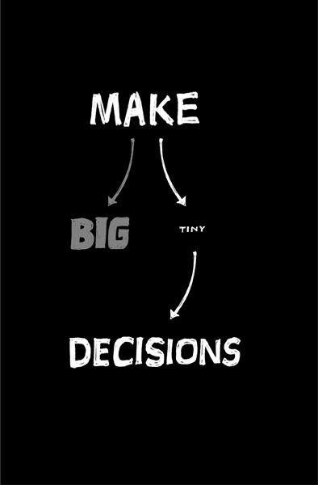

{% include JB/setup %}
{% raw %}
<div>

<h2 id="filepos137347" class="calibre19"><span class="calibre2"><a class="calibre13"></a><strong class="calibre14">Long lists don't get done</strong></span></h2><div class="calibre4"></div>
<p class="calibre7">Start making smaller to-do lists too. Long lists collect dust. When's the last time you finished a long list of things? You might have knocked off the first few, but chances are you eventually abandoned it (or blindly checked off items that weren't really done properly).</p>
<p class="calibre17">Long lists are guilt trips. The longer the list of unfinished items, the worse you feel about it. And at a certain point, you just stop looking at it because it makes you feel bad. Then you stress out and the whole thing turns into a big mess.</p>
<p class="calibre17">There's a better way. Break that long list down into a bunch of smaller lists. For example, break a single list of a hundred items into ten lists of ten items. That means when you finish an item on a list, you've completed 10 percent of that list, instead of 1 percent.</p>
<p class="calibre17">Yes, you still have the same amount of stuff left to do. But now you can look at the small picture and find satisfaction, motivation, and progress. That's a lot better than staring at the huge picture and being terrified and demoralized.</p>
<p class="calibre17">Whenever you can, divide problems into smaller and smaller pieces until you're able to deal with them completely and quickly. Simply rearranging your tasks this way can have an amazing impact on your productivity and motivation.</p>
<p class="calibre17"><a class="calibre16"></a>And a quick suggestion about prioritization: Don't prioritize with numbers or labels. Avoid saying, "This is high priority, this is low priority." Likewise, don't say, "This is a three, this is a two, this is a one, this is a three," etc. Do that and you'll almost always end up with a ton of really high-priority things. That's not really prioritizing.</p>
<p class="calibre17">Instead, prioritize visually. Put the most important thing at the top. When you're done with that, the next thing on the list becomes the next most important thing. That way you'll only have a single next most important thing to do at a time. And that's enough.</p>
<p class="calibre3"><a class="calibre16"></a></p><div class="calibre4"></div>
</div>

{% endraw %}

